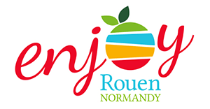

Enjoy Rouen Normandy
tl;dr Depuis juin 2015, je fais partie des embassadeurs pionniers de la marque territoriale de Rouen

C’est suite à une rencontre impromptue à Paris avec Laurence Bertho-Bedel (déléguée générale de Rouen Normandy Invest) que je suis devenu ambassadeur pionnier de la marque territoriale Enjoy Rouen Normandy lors de la cérémonie d’inauguration le 22 juin 2015.
C’est quoi une marque territoriale ?
Une marque permet à un territoire (en l’occurence la métropole rouennaise) de s’offrir une meilleure visibilité par rapport à ses concurrents, tout en symbolisant la personnalité du territoire concerné. Le but étant de renforcer son attractivité en France et dans le monde, afin de donner envie aux personnes et entreprises de venir s’y installer.
Cette notion de marque territoriale n’est pas nouvelle, la première marque française ayant été lancée en 2003 par la ville de Reims. Il faut remonter à 1977 aux Etats-Unis pour voir apparaître un logo devenu mondialement célèbre…

Pourquoi devenir ambassadeur ?
Je suis devenu ambassadeur car Rouen est ma ville d’adoption depuis 2009. Et malgré les quelques désagréments du climat normand, force est de constater qu’on s’y sent finalement très bien !
Quelques avantages de la métropole :
- Une ville à taille humaine et en constante évolution : aménagement des quais pour les piétons, création de pistes cyclables, amélioration de l’offre de transports en commun, …
- Un patrimoine très riche, la ville étant labellisée ville d’art et d’histoire depuis 2002
- Une proximité avec Paris (50 minutes de train)
- Et surtout, la campagne à 10 minutes en voiture !
Si vous aussi vous souhaitez devenir ambassadeur et promouvoir notre jolie ville, alors remplissez le formulaire dès maintenant !